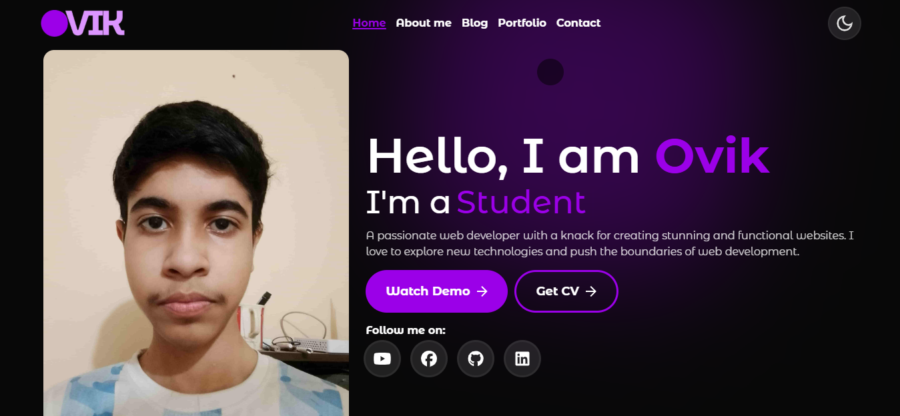

Introducing our theme
Welcome to OVIK, a modern and fully responsive portfolio template designed for creative professionals, freelancers, designers, developers, photographers, and agencies who want to showcase their work in a sleek and professional way. This template provides a perfect balance between aesthetics and functionality, allowing you to present your projects, skills, and achievements with clarity and style.
Theme information
Theme Name: OVIk - Personal Portfolio HTML Template
Creaded: 27 August, 2025
Author: CodeOVIK
Version: 3.6
Last update: 27 August, 2025
Compatible With: Tailwind CSS
Compatible Browsers: Chrome, Firefox, Safari, Edge, Opera
Included files
After downloading the package, you will get two main folders: Documentation and Template. The Documentation folder contains HTML files and assets; you can double-click any HTML file to open and view the docs in your browser. It provides detailed instructions on how to install and customize the template. The Template folder is the main template and includes all HTML, CSS, JS files, and assets needed to run your portfolio website.
Requirement
Before using the OVIK template, ensure you have Visual studio code(vs code). Follow this step to download it.
- Go this line click me and download vs code based on your operating system.

Setup your theme
See your theme in browser
Open the Template folder and double-click index.html to open the template in your browser.
Edit Code
Open the Template folder in VS Code. You will see all files including HTML, CSS, JS, and assets ready for editing.
Code example
const plugin = require('tailwindcss/plugin')
module.exports = {
plugins: [
plugin(function({ addUtilities, addComponents, e, config }) {
// Add your custom styles here
}),
]
}
Changelog
| Version | Date | Changes |
|---|---|---|
| v3.6.2 | 27 August, 2025 | Fixed some minor bugs and improved performance. |
| v3.6.1 | 15 August, 2025 | Added new portfolio layouts and updated documentation. |